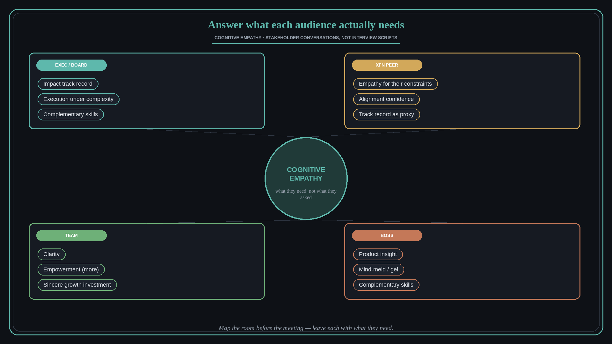

Answer what each audience actually needs, not the question they asked
Source: Shreyas Doshi (@shreyas)
original post · talk (Part 2)
What it claims
Cognitive empathy (what this person needs) beats STAR-script polish — the same skill as building products for users. Cross-functional partners often cannot evaluate PM craft and ask weak questions; your job is to answer so they get what they are truly seeking, without judging the question. Leave each audience with what they need: board/senior exec — track record of impact, execution under complexity, complementary skills; cross-functional peers — empathy for their function’s challenges, confidence in alignment (not 100% agreement), track record as proxy; team/reports — clarity, empowerment (more not less), sincere growth investment (preempt fear of being layered); boss — product insight, mind-meld / personality gel, complementary skills. Before a high-stakes conversation with someone unfamiliar, reduce novel inputs (watch/listen to them) so adrenaline drops and rapport rises. ~75% through a process, ask what they are still unsure about — secure, not desperate; care about their success.
Why it matters for a PO
Stakeholder meetings fail when you answer the literal question. Map who is in the room and leave each with what they need (impact, alignment, clarity, insight) — the same craft used in exec briefings, XFN alignment, and team conversations.
3 takeaways
- Prepare an audience map before the meeting, not a script of answers.
- Never signal contempt for a weak question — translate it into what they need.
- For peers, sell alignment + empathy for their constraints; for execs, sell impact + complementary strengths.
Practice this week
Before your next multi-stakeholder review, write one line per audience (exec / XFN / team) for what they must believe when they leave. Run the meeting to those lines.